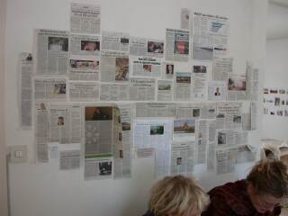

|
|
KUNSTRAUM WOHNRAUM
var stofnað af Hlyni Hallssyni og Jan Fehlis og árið 1994. Á heimili Hlyns Hallssonar og Kristínar Kjartansdóttur hafa listamenn haldið sýningar síðan. Eftir því sem fjölskyldan hefur flutt hefur sýningarrýmið einnig flutt sig um set. Flestir myndlistarmennirnir setja upp sýningarnar með heimilisaðstæðurnar í huga og hafa notað hin ýmsu herbergi, eldhús, svefnherbergi, barnaherbergi, baðherbergi, ganga, stiga, svalir, garð og svo framvegis þó að oftast séu sýningarnar í stofunni. Í Ásabyggðinni eru sýningarnar í stofu/eldhúsi.
|
Ásabyggð 2, IS-600, Akureyri, 2003-
4.10.2009. - 20.12.2009 Aðalheiður S. Eysteinsdóttir
5.07.2009. - 20.09.2009 Guðrún Vera Hjartardóttir
5.04.2009. - 21.06.2009 Huginn Þór Arason
4.01.2009. - 22.03.2009 Hanna Hlíf Bjarnadóttir
5.10.2008. - 21.12.2008 Arna Valsdóttir
27.07.2008. - 21.09.2008 Alexander Steig
16.03.2008. - 22.06 2008 Ragnar Kjartansson
6.01.2008. - 9.03 2008 Joris Rademaker
1.01.2006. - 29.03.2006 JÓNA HLÍF HALLDÓRSDÓTTIR
1.05.2005. - 29.07.2005 STEINGRÍMUR EYFJÖRÐ
6.02.2005. - 29.04.2005 BALDVIN RINGSTED
7.11.2004. - 30.01.2005 ALDA SIGURÐARDÓTTIR
1.08.2004. - 24.10.2004 ULRIKE SCHOELLER
2.05.2004. - 25.07.2004 HRUND JÓHANNESDÓTTIR
1.02.2004. - 25.03.2004 JÓN LAXDAL HALLDÓRSSON
2.11.2003. - 25.01.2004 MARGRÉT BLÖNDAL
Callinstrasse 8, D-30167, Hannover, 2000-2001
26.5.2001 - 27.7.2001 PIET TRANTEL "MENTALITY"
18.3.2000 - 13.5.2000 GÖTZ BERGAMANN "DIE RÜCKSEITE DER ZEIT"
Nedderfeldstrasse 20, D-30451 Hannover, 1998-1999
13.11.1999 - 16.12.1999 SABINE ÖLLERER "INNEN / AUSSEN"
4.9.1999 PASCALE KOMARNICKI "CINEMA 2000"
3.7.1999 - 21.7.1999 GUÐRÚN PÁLÍNA GUÐMUNDSDÓTTIR
20.2.1999 - 23.4.1999 PIOTR KOMARNICKI "TRANSITORY PRESENCE"
28.11.1998 - 18.12.1998 ROLF BIER "VIER STÜCKE FÜR EINE WOHNUNG"
7.11.1998 - 22.11.1998 MICHAEL STEPHAN "WEINT BEI MUSIK"
|
Ahlemerstrasse 15b, D-30451 Hannover, 1994-1998
1998 FEBRUARY SANDRA KAPPELMANN & CECILIA QUARNSTRÖM "INSTALLATION"
1998 JANUARY BRIGITTE RAABE "VIDEO"
1997 DECEMBER THOMAS WOLSING "INTALLATION"
1997 OCTOBER BIRGIR ANDRÉSSON "PORTRAITS"
1997 SEPTEMBER MICHAEL BOCZOR "IRRTUM KASERNE"
1997 JUNE CLAUDIA DOLL "FAMILIENBEUTEL"
1997 MAY GUNNAR KRISTINSSON "DAS TRAUMPAAR"
1997 MARCH CARSTEN GREIFE "HOME, SWEET HOME"
1997 FEBRUARY ULRIKE BOLDT "RAUMINSTALLATION"
1996 DECEMBER "5X5X5" GROUP EXHIBITION SAM C, J.FEHLIS, K. OLBRICH, U. BOLDT, C. DOLL, P. SCHMIDT, K. KLEINAU, S. ÖLLERER, M. BOCZOR, B. LÜTJEN, R. NAKAGAWA, A. STEIG, M. KOBECKE, H. ÁSMUNDSSON, K. HAUKSDÓTTIR, H. BJARNADÓTTIR, S. H. SIGURÐARDÓTTIR
1996 NOVEMBER W. DUPONT "OBJECTS"
1996 OCTOBER KATRIN KLEINAU "RAUMKLEID IV"
1996 JULY HULDA ÁGÚSTSDÓTTIR "OUT IN THE OPEN"
1996 JUNE LIND VÖLUNDARDÓTTIR "INTALLATION"
1996 MAY STEINUNN HELGA SIGURÐARDÓTTIR "OLD MEMORIES FROM ICELAND"
1996 APRIL 17TH FLOOR PRODUCTIONS "RAUMKLANGINSTALLATION"
1996 MARCH KNUT ECKSTEIN "FORMSCHÖN"
1996 FEBRUARY ANDRÉ ALDER "HOMEBEAM"
1996 JANUARY OLAV RASCHKE "ZEIT RÄUMEN"
1995 DECEMBER "ENKEL" GROUPEXHIBITION SIGURDÍS ARNARDÓTTIR, JAN FEHLIS, UWE MÜßEL, ANJA STEIDINGER, ALEXANDER STEIG, JÜRGEN WITTE
1995 NOVEMBER PETER POMMERER "HINTER GLAS"
1995 OCTOBER JÜRGEN WITTE "DÉJEUNER SUR L'HERBE"
1995 JUNE HLYNUR HALLSSON "PERFORMACES"
1995 MAY ANNAMIRL WEISHÄUPL "AUF DER HUT"
1995 APRIL ÓMAR SMÁRI KRSITINSSON "ISERNHAGENER STRASSE"
1995 MARCH AENNE LANGHORST & PERDIE BLUMM "LOCHFOTOS UND VERMÄHLTES"
1995 FEBRUARY STEINUNN HELGA SIGURÐARDÓTTIR "MERKI EFTIR FINGUR"
1995 JANUARY JAN FEHLIS "WAS ICH GEMACHT HABE"
1994 DECEMBER PETRA KALTENMORGEN "SALT LEFT"
1994 NOVEMBER T. SCHLOPSNIES "RAKETENHORST"
|
|
RAGNAR KJARTANSSON
ALLT ER GOTT AÐ FRÉTTA AF PÓESÍUNNI
16.03. - 22.06.2008
Opið samkvæmt samkomulagi
Sunnudaginn 16. mars 2008 klukkan 11-13 opnar sýning Ragnars Kjartanssonar “Allt er gott að frétta af póesíunni” í Kunstraum Wohnraum á Akureyri.
Sýning Ragnars Kjartanssonar í Kunstraum Wohnraum byggist á ljósmyndum sem Ragnar tók á símann sinn í Parísarborg af þremur listakonunum. Þessi verk eru sönnunargögn fyrir ljóðrænu tilverunnar. Þrjú guðdómleg móment úr hversdagsleikanum. Þetta eru heldur ekki hversdagslegar konur á myndunum.
Úr bréfi til vinar:
"Jæja allt er gott að frétta af póesíunni...Í dag var ég eithvað að skoða myndirnar sem ég tók á ferðalaginu, fann og prentaði út þrjár myndir sem ég tók af Ásdísi, Heklu og Laufey um helgina.... þú sagðir mér að vera duglegur að taka myndir á símann ... er eithvað að spá í að sýna þær hjá Hlyni Hallssyni und Familie (er með sýningu þar í mars) Finnst þér þetta ekki elegant portrett af listakonum í parís... músurnar þrjár ... ein í monumental augnablikinu klædd gulum sari í barrokkeyðimörkinni, önnur sofandi í módernismanum, ekki alveg að meika heiminn og sú þriðja alveg kreisí í hvirfilvindinum.... allar eru þær að hugleiða mismunandi krystalkúlur... eru í einhverju trans ástandi"
-Ragnar Kjartansson
|
|
|
|
|
JORIS RADEMAKER
Sunnudaginn 6. janúar 2008 klukkan 11-13 opnar Joris Rademaker sýninguna Mannleg tilvist í Kunstraum Wohnraum á Akureyri. Joris er Hollendingur en hefur fengist við myndlist síðan 1983. Hann var útnefndur bæjarlistamaður Akureyrar árið 2006. Joris vinnur með blandaða tækni og oft með mismunandi þema í lengri tíma í senn. Þetta er einhverskonar yfirlitssýning inni á heimili þar sem verkin samræmast alvöru og leik heimilisfólksins. Þau eru unnin út frá pússluspilskubbi, og í mismunandi tækni, vatnsliti, veggfóður, sprey, þrykk, málverk, ljósrit, klippimynd og sem objekt eða hlutir.Kunstraum Wohnraum hefur verið starfrækt frá árinu 1994, fyrst í Hannover og nú á Akureyri. Það er til húsa á heimili Hlyns Hallssonar og Kristínar Kjartansdóttur í Ásabyggð 2. Sýning Jorisar Rademakers stendur til 2. mars 2008 og er opin eftir samkomulagi og hægt er að hringja í síma 4623744.
|
MANNLEG TILVIST 06.01. - 02.03.2008
Joris Rademaker flutti 1991 til Íslands og varð skömmu síðar faðir. Hann kom í haustmyrkrinu og reyndi að fóta sig í nýju umhverfi og í föðurhlutverkinu. Þessi mikla breyting á lífinu kom fljótt fram í hans list. Í Hollandi hafði allt hans líf snúist eingöngu um myndlist. Á Íslandi varð hún að víkja fyrir launavinnu og varð frístundaiðja. Viðbrigðin að verða allt í einu faðir og í framandi landi var samblanda af gleði og einsemd. Hinu þéttbýla, frjósama og velræktaða Hollandi með aldagamla þróaða evrópska menningu var skipt út fyrir hrjóstrugt, fremur harðbýlt, kalt, einangrað land með fáum en kraftmiklum einstaklingum og unga listmenningu, fyrir utan fornbókmenntir.
Fyrir tilviljun rakst Joris dag nokkurn á barnaleikföng frá því um 1960 sem tengdamóðir hans hafði fundið undir rúmi á hótelherbergi sem hún þreif í sumarvinnu. Þetta voru marglit plastleikföng ódýr og fjöldaframleidd sem bæði gátu verið gestaþraut og púsluspil. Joris heillaðist af margbreytileika fígúranna og valdi sér eina rauða á litinn og fór að þróa hana áfram í mismunandi myndform og í margvísleg efni. Hún minnti hann á teikningu Leonardós daVinci sem stendur eins og fimmarma stjarna þar sem höfuð og útlimir vísa í mismunandi áttir. Myndverk Jorisar með þessari fígúru fjalla um einstaklinginn í alheiminum - stundum aleinan og stundum í félagslegu samhengi, mis nánu. Stundum í skipulögðum munstrum - eins og samfélagsstrúktúrinn. Í þessari fígúru tjáir Joris alvöru og gleði lífsins - einstaklingsins og heildarinnar.Joris sýndi mismunandi seríur af þessari fígúru á árunum 1994-97 en er núna að nýju að endurbæta og loka þessu þema. Þetta er því einskonar yfirlitssýning - inni á heimili þar sem verkin samræmast alvöru og leik heimilisfólksins.
|
|
|
|
|
CV
1977-1983 Myndmenntakennaranám í Tilburg í Hollandi
1983-1986 AKI: Myndlistaskólinn í Enschede í Hollandi
2006 Bæjarlistamaður AkureyrarSýningar
1987 Gallery Hooghuis, Arnhem, Holland
1988 Markt 17, Enschede, Noordkunst, Holland
1995 Listasafnið á Akureyri
1995 Slunkaríki, Ísafjörður
1997 Nýlistasafnið í Reykjavík
1997 Deiglan Akureyri, Listasumar 95 á Akureyri
1998 Gallerí+, Akureyri
2002 Slunkaríki, Ísafjörður
2002 Gallerí Skuggi, Reykjavík
2004 Safnasafnið, Svalbarðsströnd
2005 Bókasafn Háskólans á Akureyri
2005 Gallarí gangur, Reykjavík
2005 Gallerí+, Akureyri
2006 Populus Tremula, Akureyri
2006 Karólína Restaurant
|
|
JÓNA HLÍF HALLDÓRSDÓTTIR
Gegnum
Sumir gengu fattlausir gegnum áramótin og urðu ekki varir við sekúnduna sem bætt var við veraldartímann. Aðrir hafa þá gáfu að geta skyggnst á bakvið hið smáa, einfalda. Í dag er það smáorðið „gegnum“ sem Jóna Hlíf varpar ljósi á. Orðið vísar til tíma og nær yfir atburði, en jafnframt hreyfingu. Við förum gegnum tímabil; brjótumst gegnum þau þegar illa lætur, en komumst einfaldlega gegnum þau þegar skár gengur. Í stofunni blasir skyndilega við veggur sem gerir upp á milli stofunnar og eldhússins. Eldhúsþrællinn er kunnuglegt hlutverk sem við gegnum, en veggurinn yfir í náð stofunnar er gegnsær og þaraðauki er hægt að ganga gegnum hann. Hann er bara í plati. Áður hefur verið sagt um verk Jónu Hlífar að þau einkennist af barnslegri einlægni og einfaldleika, en hún hefur jöfnum höndum unnið við vídeóverk, málverk, textaverk og innsetningar. Verkið sem í dag birtist endurspeglar nokkur af einkennum hennar sem listakonu. Rendurnar sem strimlarnir birta minna á málverkin, og úr vídeóverkunum má rekast einbrotinn margfaldleika sem endurtekur sig hér.
-Hjálmar Brynjólfsson
|
1.01.2006. - 29.03.2006
Through
Some people didn’t notice the second that was added to time last night. Other have the gift to be able to see through the small and simple. Today, Jona Hlif, is reflecting the icelandic word “gegnum”, which means “through” and “obey”. The word refers to time and events, as well as movement. We go through different phases during lifetime. In the living room a wall is suddenly apparent between the living room and the kitchen. We may live a life as kitchen slaves, but the wall is almost make-belief and at least see through. If you want you can walk through it. Jona Hlif’s works have been described as childishly sincere and simplistic, and she has been working on videos, paintings, text works and installations. Today’s work presents some of her characteristics. The stripes in this installation reflect the paintings, and in her video works one can find simple multiplicity as in this work.
-Hjálmar Brynjólfsson
|
|
|
|
|
|
STEINGRÍMUR EYFJÖRÐ
KUNSTRAUM WOHNRAUM, Ásabyggð 2, IS-600, Akureyri, 1.05.2005. - 29.07.2005
Þetta eru teikningar af tindátum?
Jú. Fyrirmyndirnar eru af tindátum sem voru í umferð hjá kynslóð sem erfædd á árunum 1945 til 1975. Flestir sem sjá þessar myndir þekkja þessi form aftur. Bæði smáatriðin og sérstaklega stellingarnar sem segja kannski meira en nokkur orð. Sumir komu bognir úr verksmiðjunni og aðrir urðu fljótt nagaðir á endunum.
En myndirnar sjálfar?
Þær sýna hólf inni í minningunni sem er orðið aðeins bjagað og þessir hreinu litir lýsa kannski fyrst og fremst litnum á plastefninu sem tindátarnir eru gerðir úr. Þetta er eins konar öfug upplitun; málningin er afmáð og í ljós koma hinir hreinu frumlitir plastsins. Þetta eru form eða mynd sem hefur einungis áhrif á þessar tilteknu kynslóðir. Þau eru hlaðin vísunum og merkingum sem hafa hlaðist utan á Þessi form með árunum.
Kannski ekki ósvipað og ákveðnar stellingar líkamans í klassískum styttum og hinu sögulega málverki hafði áhrif á hugsunarhátt og hegðun fólks áður en fígúran yfirgaf myndflötinn og færði sig yfir á ljósmyndina og síðan kvikmyndina?
Já algjörlega. Tindátarnir eru dæmi um heim er til staðar lengst inni í hugarheimi hvers og eins hjá þessari kynslóð. Það sem er mjög áhugavert við þá er að maður þarf ekki að sjá þá sérstaklega til þess að þeir verði raunverulegir. Þeir hafa þegar öðlast sjálfstætt líf í sameiginlegri menningarvitund.
Án þess að gleyma sér í eðlishyggju þá er nokkuð ljóst að það voru fyrst og fremst drengir sem léku sér með svona tindáta. Er þetta ekki frekar karllægur heimur sem þú ert að sýna okkur hérna?
|
Jú það er alveg á hreinu. Eins og við munum þá var tveimur liðum stillt upp og lítilli kúlu komið fyrir á milli þeirra. Henni var síðan rúllað á víxl til að fella andstæðinginn.
Þrátt fyrir að þetta sé karllægt á yfirborðinu er þetta kynlaust í eðli sínu.
Það er alveg spurning. Indjáninn er náttúrulega fulltrúi fyrir hið villta og óþekkta, náttúruna og eðlið, meðan kúrekinn ræðst inn á þeirra svæði og reynir að eigna sér og koma skipulagi á óreiðuna sem hið óþekkta er í huga hans. Stelpur og konur hafa ekki áhuga á þessum heimi og hafa kannski aldrei skilið hann. Í rauninni fyrirlíta þær hann og þau gildi sem hann stendur fyrir.
Stundum er sagt að þetta sé allt saman skilyrt frá fæðingu og stelpur sjái frekar um heimilið með því að æfa sig að klæða dúkkur og elda fyrir fjölskylduna mat. Ef ég væri að höfða til kvenna væri ég sennilega með dúkkur, föt og blóm en það er önnur saga. Það er kvennasaga.
Hvað með hin kynlausu leikföng leggur og skel sem íslensk börn gleymdu sér með áður en þau fluttu til borgarinnar. Þau eru öll orðin að minjagripum fyrir mörgum áratugum. Alveg eins og þessir tindátar.
Já þeir eru úreltir en virka ennþá á þessa kynslóð sem “instant regression” í þroska. þannig eru áhrif myndlistarinnar. Hún hefur áhrif á það sem undir býr.
Það ríkir mjög sterk nostalgía yfir þessum verkum. Jafnvel sorg.
Það getur verið tengt dauðanum. Þessir leikir snúast um að drepa og vera drepinn.
Sem er nátengt kynhvötinni, valdi og stjórn.
Ég sé þetta líka sem það sem gerist á jaðrinum á dauðarýminu.
|
Hvaða rými er það?
Það er þar sem ekkert er.
Einhvers konar núllpunktur eða hvað?
Ekki einu sinni það. Þetta er eiginlega líkan af grunnhugmyndum af mörgum myndum. Sérstaklega Hollywoodmyndum. Annars vegar þroska til tólf ára aldurs og hins vegar þegar farið er inn á svæðið sem snýst um átök og dauða. En aldrei er okkur sagt að þetta dauðarými er þar sem ekkert er. Það er líka hægt að hugsa sér að þessar myndir eða inprint séu lyklar inn í heim sem endurtekur sig í sífellu. Alveg eins og kúlubardaginn. Þannig er reglan í Hollywood myndum og þeirri menningu sem er mótuð af henni.
Drengurinn verður meðvitaður um kúlurnar við kynþroskann. Þegar eistun síga niður. þá byrjar alveg nýtt tímabil. Hann missir sakleysið. Þegar hann leggur frá sér tindátana breytist hann á vissan hátt í tindáta sjálfur og sektarkenndin hrjúfrar um sig í líkamanum.
Rétt eins og hjá stúlkunni. Hún getur auðveldlega breyst í dúkku þegar hún getur sjálf byrjað að fjölga sér við kynþroskann.
Vissulega. En maðurinn er sem betur fer ekki vélrænn. Þegar kúlan er á leiðinni á milli þá vakna upp spurningar um fegurð, ást, dauða, guð, líf og svo framvegis. Þess vegna er endurtekningin möguleg.
Já þó að goðsagan sé í eðli sínu tímalaus þá erum við öll fangar hennar. Hún endurtekur sig endalaust og maður kemst ekki út úr henni.
Ferðalag kúlunnar og þær spurningar sem vakna upp á leiðinni eru tími dauðastundarinnar.
|
|
|
|
|
|
|
|
BALDVIN RINGSTED
b.01.07.'74 Akureyri
Nám:
’00 - ’04.....Myndlistaskólinn á Akureyri, Diploma
’03 - ’03.....Lahti polytechnic school of art Finland
’03 – ’04.....A.C.F.A (Ýmis námskeið)
’94 – ’97.....Tónlistaskóli F.Í.H.
’91 –’93......Verkmenntaskólinn á Akureyri
Sýningar:
Café Karolina Akureyri 2004
Fuglafjord, Fuglafjörður,Færeyjar 2004
Útskriftarsýning Myndlistaskólans á Akureyri 2004
Ketilhús Akureyri 2004
Deiglan Akureyri 2004
galleri Svarti kassinn 2004
Bögglageymslan Akureyri 2003
Lansbankinn Akureyri 2002, 2003
|
|
|
|
|
|
|
ALDA SIGURÐARDÓTTIR
Landslagsverk
Hvernig upplifi ég landslag, íslenskt landslag?
Hvernig hefur þessi upplifun breyst?
Ég hef heyrt og lært falleg ljóð sem lýsa og tigna landslagið. Ég hef séð málverk, ljósmyndir og kvikmyndir sem lýsa og tigna landslagið. En mér hefur alltaf þótt það sem ég horfi á út um gluggann vera stórkostlegra en það sem er í gullrammanum yfir sófanum. Ég hef gengið um landslagið og verið í því. Tignað það og sogað til mín áhrif þess. Verið hluti af því stolt og rík.
Það sem nú hefur fyrst og fremst áhrif á upplifun mína á landslaginu eru umræður um nýtingu þess. Þar fer mest fyrir stjórnmálamönnum og áhugamönnum um vinnuvélar. Með þeim eru útlendingar sem hafa áhuga á að kaupa ódýrt rafmagn.
Í staðinn fyrir ást og aðdáun, virðingu, unað, djúpa hrifningu, sælukennd, lítillæti og stolt finn ég aðeins fyrir sorg, söknuði, reiði, ótta, biturleika, vonleysi, sársauka, dofa og skömm.
Alda Sigurðardóttir (1960)
Ártún 3, 800 Selfoss
(354) - 482-3925
e-mail: aldasig@simnet.is
web: http://www.simnet.is/aldasig
|
|
 |
 |
CV
Studies:
* University of Iceland, BSc. in nursing 1984
* Icelandic College of Arts and Crafts, Multimedia, 1989-1993
* Helsinki Art Akademi 1991
* Courses in design and computer work.
Main group exhibitions:
* 1993, SIXTEEN DAYS, The Living Art Museum, Reykjavík
* 1995, GULLKISTAN at Laugarvatn, curated and parttook -104 visual artists
* 1996, TUKT, at a deserted jailhouse in Reykjavík
* 1997, PORTMYNDIR, in alleys by the main shopping street in Reykjavík
* 1998, NU, four icelandic artists in Gallery North, Copenhagen, Denmark
* 1999, LAND, 29 Icelandic female artists in Listasafn Árnesinga in Selfoss. IFor Icelandic wilderness.
* 2000, SAMRÆÐUR VIð SAFNEIGN, (Dialogue with a collection) The LAM (Living Art Museum).
* 2000, NORDIC ART EXCHANGE, Kalmar, Sweden.
* 2001, FELLINGAR, Curated and parttook - 13 Icelandic women artists in cooperation with the Library of Womens History and the National and University Library.
* 2001, CAMP, Lejre in Denmark
* 2002, CAMP Hornafjörður, in Iceland.
* 2003, KOLONIALEN, Bryggen, Copenhagen.
Solo exhibitions:
* 1994, Portið, Hafnarfjörður
* 1996, The LAM in Reykjavík
* 1996, Reykjavík City Theater
* 1996, Gallery Gulp, a travelling box gallery
* 1996, Gallery Barmur, a travelling brouch
* 1998, Gallerí Slunkaríki, Ísafjörður, Iceland
* 1998, Árnessðsla's Art Museum, Selfoss, Iceland
* 1999, Galleri Minimo, Hannover, Germany
* 2000. Art festival in Seyðisfjörður, Iceland.
* 2004. Kunstraum Wohnraum, Akureyri, Iceland.
|
|
|
Sunnudaginn 2. maí 2004, klukkan 11-13 opnar HRUND JÓHANNESDÓTTIR sýningu í KUNSTRAUM WOHNRAUM, Ásabyggð 2, 600 Akureyri. Þetta er fjórða einkasýnin Hrundar en hún hefur tekið þátt í á annan tug samsýninga. Hún útskrifaðist frá Listaháskóla Íslands 2002. Hrund vinnur með skúlptúra, myndbönd, innsetningar, gjörninga og hljóðverk svo eitthvað sé nefnt. Í einu myndbandi situr listamaðurinn í lokuðu herbergi með vodkaflösku og kók á klárar þessa drykki á klukkustund. Áhorfandinn getur séð hvað tímanum líður á jlukku sem hangir á veggnum bak við listamanninn. Í verkinu "Málverk" sem Hrund gerði í Finnlandi drakk hún hálfan líter af mjólk blandaðri með bláum matarlit, ældi svo í skál og málaði finnska fánann í tilefni þjóðhátíðardags Finna. Eftirminnilegt er einnig verk sem hún sýndi á Grasrótarsýningunni í Nýlistasafninu síðasta haust. Þar var trékofi sem leit út fyrir að vera sundurskotinn en við nánari athugun mátti sjá að götin 1000 voru eftir borvél. Annars segir Hrund sjálf um verkin sín: "Engar heimspekilehgar útskýringar eða vangaveltur fylgja verkunum mínum, áhorfandinn upplifir verkin á sínum forsendum, ekki mínum." Það verður því spennandi að sjá hvað hún gerir í heimilisaðstæðunum í KUNSTRAUM WOHNRAUM á Akureyri. Sýningin stendur til 25. júlí og eru allir velkomnir. |
|
 |
HRUND JÓHANNEARDÓTTIR
2002 Listaháskóli Íslands, B.A. Myndlista, skúlptúrdeild
1999 Fjölbrautarskólinn í Breiðholti, Stúdentspróf
1996 Iðnskólinn í Hafnarfirði, útskrifaðist af hönnunarbraut
Einkasýiningar:
2001 Sofandi Þyrnirós, Neðanjarðarlestarstöð (Kaisanemi) Helsinki
Ónefnt, Kælirinn, LHÍ
2000 Átrúnaðargoðið, Gallerý Nema Hvað
Samsýningar:
2003 Grasrót, Nýlistasafnið
2002 Vinnustofusýning, Skipholti
Opna galleríið, Menningarnótt
Útskriftarsýning, Listaháskóli Íslands
2001 Hringferðin, Safnaðarheimilið Blönduósi
BITCH, Gula húsið
Go Shopping, búðartaka listnema, IKEA
2000 Jólasýing, Gula húsið
Athygli, tilfinning..., Gula húsið
1998 Unglist, Gallery Geysir
1996 Útskriftarsýning, Iðnskólinn í Hafnarfirði
|
|
JÓN LAXDAL HALLDÓRSSON *1950
Einkasýningar (One-Person Exhibitions)
1982 Rauða húsið
1983 Rauða húsið
1987 Nýlistasafnið
1989 Gamli Lundur
1991 Laxdalshús
1993 Boekie Woekie
1993 Kaffi Karólína
1994 Listasafnið á Akureyri
1995 Lundur
1995 Nýlistasafnið
1996 Deiglan
1997 Gallerí +
1998 Bókasafn Háskólans á Akureyri
1999 Svartfugl
2000 Kompan
2003 Ketilhúsið
Helstu samsýningar (Selected Group Exhibitions)
1984 Glerá
1986 Glugginn
1992 Van den Berge
1993 Van den Berge
1993 Galerie Valerie
1993 Exess festival
1995 Við Hamarinn
1999 Kjarnaskógur
2000 Losti 2000
2003 Ferðafuða<
|
Bækur (Books)
1974 Myrkur í hvítri örk
1981 Flugur
1981 Ljóð (niðursoðin)
1982 Næturljóð
1983 Stofuljóð
1989 Prósi
1989 Verðlaun í ljóðasamkeppni Akureyrarbæjar
1991 Ljóð (niðursoðin)
Verk í opinberri eigu (Works in Public Collections)
Akureyrarbær
Húsavíkurbær
Menntaskóplinn á Akureyri
Útgerðarðarfélag Akureyrar
Bæjarlistamaður Akureyrar 1993-1994
|
|
|
|
|